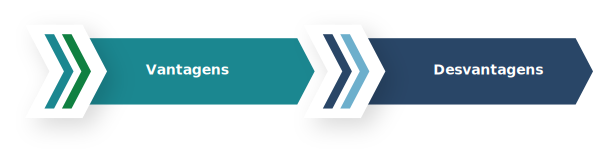

TÓPICO 3
DESENVOLVENDO O POTENCIAL DE LIDERANÇA
TÓPICO 3
DESENVOLVENDO O POTENCIAL DE LIDERANÇA
Pensando na tomada de decisões em equipe, o princípio geral é que as pessoas tendem a apoiar decisões nas quais tiveram parcela de contribuição. Robert Quinn e colaboradores (2015) destacam algumas vantagens e desvantagens relacionadas ao processo decisório em equipe.
Clique em cada uma para conhecê-las.
VANTAGENS
• Proporciona variadas percepções.
• Engloba pessoas com crenças e valores distintos, preocupações e concepções diferentes, o que eleva a possibilidade de que as questões e as pautas relevantes emerjam.
• Agrega conhecimentos e vivências dos integrantes da equipe; fortalece o compromisso com a execução das atividades, ao passo que as pessoas compreendem o motivo pelo qual determinada decisão foi tomada.
• Colabora para o desenvolvimento de equipes, pois as pessoas desenvolvem competências e habilidades quando integram equipes de tomada de decisões.
DESVANTAGENS
• Aumenta o tempo para se chegar a uma decisão em virtude da ampliação do número de pessoas envolvidas.
• Torna as reuniões de equipes ineficazes, pois quando não bem organizadas, acabam desperdiçando o tempo e podem gerar distanciamento do grupo.
• Quando existe forte coesão, ocorre o pensamento coletivo, os membros evitam criticar as ideias dos outros e deixam de pensar objetivamente sobre a decisão.